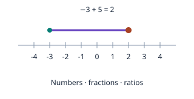

Find your subject, choose a starting point, and explore a few ideas. Use your work and the feedback to decide what to practice next.
Quidence checks fixed answer parts and saves your calculations, drawings and explanations for review. It does not automatically verify every written step. Discuss your report with a teacher or tutor, or keep learning here.
Reports you open and foundation-check answers are saved in this browser when saving is available. New work stays on this browser. Download a copy before leaving a shared device. Save or delete records. View saved reports →
Learning requests stay in this browser during public testing. Accounts and cloud sync are paused. Before sharing a copy, remove personal information and choose a tutor you are allowed to use. ChatGPT requires age 13 or the local minimum age, and parent or guardian permission under 18. Claude’s consumer service requires age 18 or the higher local minimum. Provider terms checked October 7, 2026. Quidence is not affiliated with either provider. Check their current terms. You can also continue with Quidence’s lessons and checks. How your records are saved.
3 · TRY OUR PROBLEMS
Choose a course and start.
No learning request is needed. Start with a diagnostic challenge if you want to test your understanding, or use the introductory lessons to review. Each course keeps its own work.
School Mathematics
Four separate courses. Choose the class you are taking.
PRE-ALGEBRAIntroductory activities

Pre-Algebra
Signed numbers, fractions, ratios, and expressions.
Seven introductory lessons; start after basic mechanics. Selected foundations, not a complete advanced course.
Eight mathematics courses and two physics foundations courses · 52 diagnostic problems and 20 field projects. Linear Algebra has twelve checks, each physics track has six, and each other course has four. Two projects per course.
You can start with any course. This choice does not assign you a level.